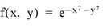

The INT_2D function computes the double integral of a bivariate function using iterated Gaussian quadrature. The algorithm’s transformation data is provided in tabulated form with 15 decimal accuracy.
This routine is written in the IDL language. Its source code can be found in the file int_2d.pro in the lib subdirectory of the IDL distribution.
Result = INT_2D( Fxy , AB_Limits , PQ_Limits , Pts [, / DOUBLE ] [, / ORDER ] )
Returns a double value containing the integral.
A scalar string specifying the name of a user-supplied IDL function that defines the bivariate function to be integrated. For dy/dx integration (the default, or if the ORDER keyword is explicitly set to zero), the Fxy function must be able to accept a scalar value for X and a vector for Y, and must return a vector of the same length as Y. For dx/dy integration (if the ORDER keyword is set), the Fxy function must be able to accept a vector for X and a scalar value for Y, and must return a vector of the same length as X.
For example, if we wish to integrate the following function:

We define a function FXY to express this relationship in the IDL language:
FUNCTION fxy, X, Y
RETURN, EXP(-X^2. -Y^2.)
END
A two-element vector containing the lower (A) and upper (B) limits of integration with respect to the variable x .
A scalar string specifying the name of a user-supplied IDL function that defines the lower (P( x )) and upper (Q( x )) limits of integration with respect to the variable y . The function must accept x and return a two-element vector result.
For example, we might write the following IDL function to represent the limits of integration with respect to y :
FUNCTION PQ_limits, X
RETURN, [-SQRT(16.0 - X^2), SQRT(16.0 - X^2)]
END
The number of transformation points used in the computation. Possible values are: 6, 10, 20, 48, or 96.
Set this keyword to force the computation to be done in double-precision arithmetic.
A scalar value of either 0 or 1. If set to 0, the integral is computed using a dy-dx order of integration. If set to 1, the integral is computed using a dx-dy order of integration.
Compute the double integral of the bivariate function.
FUNCTION Fxy, x, y
RETURN, y*COS(x^5)
END
; Define the limits of integration for y as a function of x:
FUNCTION PQ_Limits, x
RETURN, [0.0, x^2]
END
; Define limits of integration for x:
AB_Limits = [0.0, 2.0]
; Using the function and limits defined above, integrate with 48
; and 96 point formulas using a dy-dx order of integration and
; double-precision arithmetic:
PRINT, INT_2D('Fxy', AB_Limits, 'PQ_Limits', 48, /DOUBLE)
PRINT, INT_2D('Fxy', AB_Limits, 'PQ_Limits', 96, /DOUBLE)
INT_2D with 48 transformation points yields: 0.055142668
INT_2D with 96 transformation points yields: 0.055142668
Compute the double integral of the bivariate function:
FUNCTION Fxy, x, y
RETURN, y*COS(x^5)
END
; Define the limits of integration for y as a function of x:
FUNCTION PQ_Limits, y
RETURN, [sqrt(y), 2.0]
END
; Define limits of integration for x:
AB_Limits = [0.0, 4.0]
; Using the function and limits defined above, integrate with 48
; and 96 point formulas using a dy-dx order of integration and
; double-precision arithmetic:
PRINT, INT_2D('Fxy', AB_Limits, 'PQ_Limits', 48, /DOUBLE, /ORDER)
PRINT, INT_2D('Fxy', AB_Limits, 'PQ_Limits', 96, /DOUBLE, /ORDER)
INT_2D with 48 transformation points yields: 0.055142678
INT_2D with 96 transformation points yields: 0.055142668
The exact solution (7 decimal accuracy) is: 0.055142668
|
Pre 4.0 |
Introduced |
INT_3D , INT_TABULATED , QROMB , QROMO , QSIMP